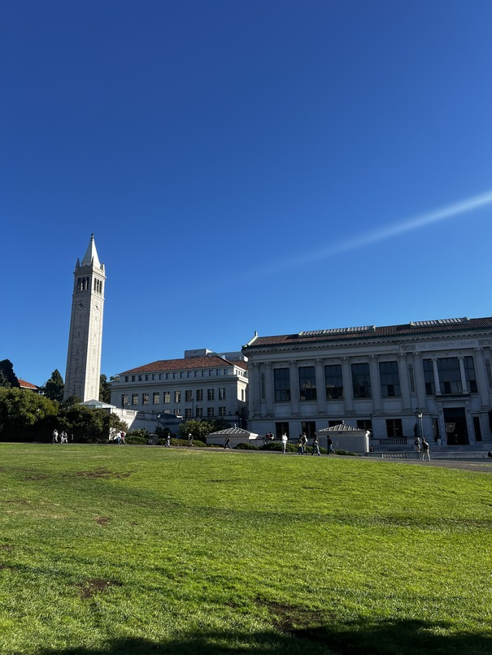

Introduction
In this project I performed image rectification using homography and created panoramas from sets of multiple images.
Part A
Images
Below are the images I used for part A of this project.


Recovering Homographies
I marked key correspondance points between relevant features in the pair of images. Here are the matching correspondance points in the images.

To estimate the homography matrix \( H \) between two images, we start with the relationship between corresponding points in homogeneous coordinates: \(q\)=\(Hp\) where \(q\) and \(p\) are points in the first and second images, respectively, represented in homogeneous coordinates. The calculation for the homography matrix using this theory is shown below.

For this to be underdetermined, we require at least 4 correspondence points between the two images. If there are more, we can use least squares to find a good approximate solution.
Rectification
To rectify images, I marked keypoints on the corners of the surface. I then used the homography matrix and inverse warping to warp the desired surface onto a flat plane that I defined in a second image. Something I noticed was that these results were very sensitive to errors in point selection since they were manually selected.

Warping Images
With a homography matrix, we can reproject points in one image
onto another and stitch them together. To do so we would also
need to compute the bounding box of the final image by taking
the four corners of the given image and applying the homography
to project it onto the second image (in this case we are warping
image1 to image2). This gives us the polygon in which the final
image wil be placed. Then we interpolate the pixels in both
images for each pixel in the final image using
scipy.interpolate.griddata.
Blending Images
To better blend the images, I used an alpha channel to determine where the images lied on each other. The distance transform sets each pixel inside a reigion to be the distance to the nearest edge. I used this to create the alpha channel, here is a visualization of the distance transform of the two images.
These distance transforms are used as weights for two band blending where I compute a loss pass and high pass filter of the image and blend them seperately. This is the result:
I tried it on a couple other examples:


Part B
Introduction
In this part of the project, I am making an automatic feature matching and stitching for the mosaic.
Corner Detection
In order to find the interest points in the image, I want to find the corners of the image. I initially try to do this was a Harris interest point detector and use peaks in the matrix as the corner points. This is the result:
Adaptive Non-Maximal Suppression
The output of the Harris interest points are good, but they're very clustered together with alot of redundant information. Adaptive non maxmal suppression (ANMS) is an algorithm to find a more even distribution of points across the image. I implemented this using k-d trees to find the set of neighboring points within a radius and suppressing weaker points within that radius. This implementation follows "Efficient adaptive non-maximal suppression algorithms for homogeneous spatial keypoint distribution" by Bailo et al. The result is as follows:
Feature Descriptor Extraction
From each interest point we want to extract the corresponding features. To avoid aliasing, we blur the image before with a gaussian blur filter. We sample from a patch of radius 20 of size 40x40 with spacing s=5 (8x8). After sampling the features are flattened and normalized. Here is a sample of 5 of the features:
Feature Matching
After extracting features from both images, we want to find the corresponding features across both components and match them to create correspondances. The ratio of error for the first nearest neighbor and second nearest neighbor is computed and used against a threshold value, as defined by Lowe's trick, which helps better identify matches. This is because the cloest neighbor should be much better than the second closest if it is a real match.
RANSAC
Although the number of outliers was reduced, there are still alot of incorrect pairings as the least squares is not robust to outliers. To solve this, we use RANSAC: by sampling 4 random pairs of points and computing the homography through these points, keeping track of inliers as we go we can produce a homography taht produces the most inliers which ignores the correspondence points taht do not follow the majority transformation. As a result, the correspondances that are generated are more accurate.
Results
I also tried creating mosaics for the following pairs of images
Campinile 1
Campinile 2
Fridge 1

Fridge 2
These were the final results
Image board (mosaic1)
Campinile (mosaic2)
Fridge (mosaic3)
The coolest thing I learnt about this project was how features are defined in images through corners and how they can be matched to create a mosaic. I also learnt about the importance of RANSAC in removing outliers and how it can be used to create a more accurate homography. It was interesting to see how different images resulted in different qualities of features produced!